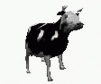

Florham Park, NJ

~ Welcome to my Home Page! ~Steven Bleifer.
Commercial Audit Associate at KPMG. NYU Stern MS in Accounting, Class of 2026.
KPMG Audit
CPA: 2 of 4 passed
NYU Stern '26
Pitt '25 — Summa Cum Laude
About
I'm a Commercial Audit Associate at KPMG in Morristown, and I've passed two of the four CPA exam sections. I earned my MS in Accounting from NYU Stern in 2026, where I was a Graduate Student Ambassador. Before Stern, I graduated Summa Cum Laude from the University of Pittsburgh with a B.S. in Business Administration, Accounting.
Before joining full time, I interned with KPMG and EY, and spent a year as a Teaching Assistant for Introduction to Financial Accounting at Pitt.
Outside of work: guitar, bass, the New York Times crossword, and following the Knicks, Steelers, Yankees, and Devils.
Recently
- 2026Passed 2 of 4 CPA exam sections
- Fall 2026Started at KPMG as a Commercial Audit Associate
- May 2026Graduated from NYU Stern — MS in Accounting
- Sep 2025NYU Stern MS in Accounting Merit Scholarship
- Summer 2025Commercial Audit Intern at KPMG
- Apr 2025Graduated Pitt — Summa Cum Laude